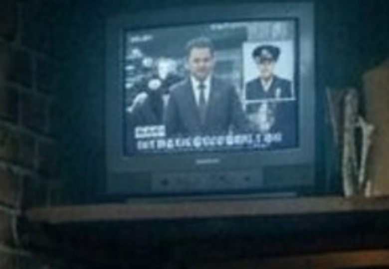

The closing news is two frames again: Kurose, then Ishida.
The last scene’s television beat had drifted from the recovery note: nw_b1678 carried both Kurose and Ishida’s police portrait crammed into one screen, and nw_b1679 fell back to that same picture instead of a frame of its own. Two new plates were voted and installed — the evening news on the set, then the broadcast cutting to a formal photograph of Ishida in uniform — with a depth camera each. The second half of this page records the smaller fix the same pass turned up: the invented “Japanese” chyron (耕ニンヌ) that ran at inset scale on the four wide frames of the same shop.
SHOT 01 · nw_s100 · 100 — The shop · nw_b1678
On a shelf above the door, a small old television with the sound down: the evening news.
Kurose walks in between his lawyers, cameras flashing, his face composed. Kaneko and Jack are behind, at the counter; Vera arrives afterwards.
Create ONE horizontal widescreen 16:9 photorealistic cinematic film still for the Tokyo noir drama Nobody's Witness: the epilogue, inside Kaneko's tiny noodle bar under a brick railway arch at night. The first reference shows the same shop, the same elderly Kaneko behind the counter and the same small old television on the wooden shelf above the door; use it only for the room, the shelf, the lighting and the wardrobe. Compose a slightly closer shot on that shelf, seen at a three-quarter angle from the counter side: a small old dusty CRT television, sound off, on the wooden shelf above the dark blue noren curtain. On its small screen, the evening news: the composed Japanese politician KUROSE — matching the exact face, age, swept-back silver hair and heavy-lidded calm of the man in the second reference — in a dark navy suit and tie, walking toward a building entrance between two suited lawyers, press photographers' flashbulbs flaring white around him, cool grey daylight behind them on the screen. Foreground and lower edge stay soft: the warm bare bulb, the brick arch, drifting steam, and behind them Kaneko at the counter and a dark-coated man on a stool with an empty space beside him. Warm tungsten light on the set's dusty plastic casing against the cold grey-blue light of its own screen, muted midnight-teal palette, restrained 35mm film grain, true 16:9 landscape frame with comfortable headroom. The screen's lower third is only a plain soft bar with no lettering; no captions, subtitles, chyrons, readable or invented text, logos or watermarks anywhere.
Depth-map prompt
Create a pure greyscale DEPTH MAP (a Z-pass render) for the supplied 16:9 cinematic film still — not a photograph, not a shaded render. Use the reference only to trace exactly what is where: keep the identical framing, crop and 16:9 aspect, and align every silhouette edge precisely to the reference with clean, crisp, unfeathered boundaries. Luminance encodes distance only: no texture, no colour, no lighting, no highlights, no brick pattern, no screen picture detail, no steam, no grain, no vignette, no border, no text, no signature.
Nearest surfaces, near-white (about 0.92-0.98): the wooden slab running along the very bottom edge of frame beneath the television, and the dark brick pier filling the frame's far-left edge from top to bottom.
Second nearest, light grey (about 0.72-0.85): the small old television set itself in the upper centre-right — its front plastic bezel, its dusty speaker grille and control buttons along the bottom, and its curved cabinet sides.
Mid-ground, mid grey (about 0.52-0.66): the television's glass screen and the flat news picture on it, treated as one smooth recessed panel inside the bezel.
Farther, dark grey (about 0.30-0.44): the pale cardboard box standing to the right of the set and the low stack of newspapers and boards below it.
Deeper, darker grey (about 0.16-0.28): the dark blue noren curtain panels in the doorway on the right, and the shop's brick arch and dark ceiling across the top of frame.
Background, near-black (about 0.03-0.10): the dim interior behind and below the shelf — the far counter, the elderly woman and the seated man, the bulb's glow and the steam — barely separated masses. Single flat greyscale depth map, full-bleed 16:9, no colour anywhere.
SHOT 02 · nw_s100 · 100 — The shop · nw_b1679
…A photograph of ISHIDA in uniform.
The same broadcast, one cut later: the studio portrait, held long enough for the shop to not look up.
7.00 s (168 frames), then 1.50 s of held silence on the same picture for “Nobody looks up.”
References
/film/img/s100/158-the-third-stool.jpg (the set) · /film/img/jack_ishida_new/style-sheets/refs/ishida-face.jpg (Ishida’s face)
Prompt
Create ONE horizontal widescreen 16:9 photorealistic cinematic film still for the Tokyo noir drama Nobody's Witness: the epilogue, in Kaneko's tiny noodle bar under a brick railway arch at night. The first reference shows the same old television standing on the wooden shelf above the door in that shop; keep the same set, shelf, brickwork and warm bulb so this reads as the very next moment on the same screen. Compose a closer shot of the small old dusty CRT television, angled toward the counter, its dark plastic bezel with a dusty speaker grille and worn dials filling the frame edges. On the screen: a formal police press portrait, head and shoulders, of ISHIDA — matching the exact face, brow, nose, jawline and neatly combed salt-and-pepper hair of the man in the second reference — now composed and unsmiling in a dark navy Japanese police uniform with silver collar insignia and a peaked cap, lit flatly against a plain pale grey studio background, framed with a thin light border like a photograph shown on air. The image is slightly soft, faintly scan-lined and cool, as a small television broadcast would be; the glass carries a faint reflection of the shop's warm bulb. Around the set the shot stays dark and soft: brick arch, noren, steam, the wooden shelf edge. Warm tungsten spill on the casing against the cold screen glow, muted midnight-teal palette, restrained 35mm film grain, true 16:9 landscape frame. No lettering on the screen's lower third; no captions, subtitles, chyrons, readable or invented text, logos or watermarks anywhere.
Depth-map prompt
Create a pure greyscale DEPTH MAP (a Z-pass render) for the supplied 16:9 cinematic film still. Trace what is where: identical framing and 16:9 crop, crisp aligned silhouette edges. Luminance encodes distance only: no texture, no colour, no lighting, no scan lines, no broadcast detail, no grain, no vignette, no border, no text.
Nearest, near-white: the wooden shelf edge along the bottom of frame, and the brickwork filling the far-left edge.
Second nearest, light grey: the television cabinet across the centre — the thick front bezel, the two large round dials standing proud at the upper right, the vertical speaker grille below them, and the control strip along the bottom.
Mid-ground, mid grey: the curved glass screen and its pale blue broadcast background with the thin light frame around the portrait.
Farther, slightly darker: the flat portrait itself, a shallow panel recessed a touch inside the glass.
Farther again, dark grey: the pale wooden cabinet face behind the set at the right, and the small dark cased object at the lower right corner.
Background, near-black: the unlit brickwork and dim room above and right of the set, the deep shadow in the top right corner, the faint steam haze. Single flat greyscale depth map, full-bleed 16:9, no colour anywhere.
03 · nw_s100 · same scene · four wide frames
The invented chyron, scrubbed from the inset screen.
The same illegible broadcast lower-third — a station badge and Japanese-looking nonsense — was drawn on the small television in every wide shot of the shop. Each frame’s own pixels in that area were locally defocused through a feathered mask: no pixel copied from another frame, nothing redrawn or lettered, and the rest of each picture untouched. The shop’s own sign (金子) is genuine and was left alone.
Repaired, not regenerated
Why defocus rather than paint. The band sits inside a defocused television image on a screen 130–160 px wide. A soft, tone-matched band reads as an unreadable news graphic; an invented plate would either letter it again (worse) or replace pixels that belong to the shot. Archive copies of all four frames are kept as --v4.

158 before · badge + text line legible at inset scale158 after · a soft unlettered lower-third
No depth maps cover these frames, so nothing had to be re-traced.
Notes
What changed, and what deliberately did not.
Timing. The two new frames split the hold nw_b1678 already owned: 4.71 s for the news, 7.00 s for the photograph, unchanged beat count, total duration, captions, voice and music. Neo-Noir goes from 705 to 706 clips.
What was not touched. The superseded picture 320-the-news-nobody-watches.jpg is kept on disk and archived as --v2; it now runs on no beat. Its depth folder and studio-edits.json look are left as they are — that look is keyed by picture filename and cannot tell the two new beats apart, so retargeting it would have given both beats the same camera.
Following frames.161-stool-three is now the closest thing to a “next shot” after the news, and its inset screen had the same chyron: it is one of the four repaired. 1682-the-curtain-moves and 1685-money-on-the-counter cut away from the shelf and carry no lettering.
Still on the recovery list. The quality-rejected options and the remaining recreations in IMAGE_RECOVERY.md are untouched by this pass.